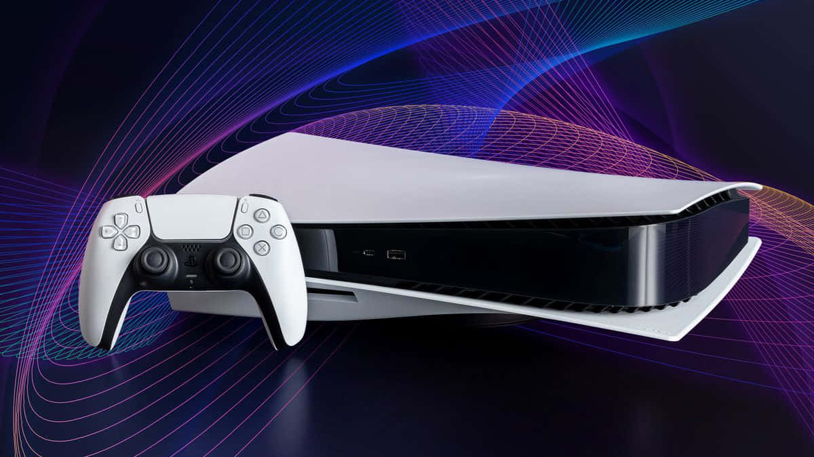

PlayStation 6: Orion, Project Amethyst y la portátil Canis Sony no ha anunciado oficialmente la PS6, pero el dibujo que trazan las filtraciones es inusualmente detallado. El silicio central responde al nombre clave “Orion”: un APU personalizado de AMD con CPU Zen 6 y GPU RDNA 5 en un nodo de 2 o 3 nanómetros de TSMC que rondaría los 34-40 TFLOPs de rasterizado, unas tres veces la PS5 en terminos de potencia de cómputo, y multiplicaría por entre seis y doce veces el rendimiento en ray tracing, según filtradores como Kepler_L2 o Moore’s Law Is Dead. La memoria sería GDDR7, de 30 a 40 GB, con unos 640 GB/s de ancho de banda, un 43% más que los 448 GB/s de la PS5. Lo confirmado es la apuesta por la IA dentro del silicio. En octubre de 2025, el arquitecto jefe Mark Cerny y el directivo de AMD Jack Huynh anunciaron Project Amethyst, una colaboración para integrar “Neural Arrays”, unidades de cómputo que funcionan como un motor de IA combinado, “Radiance Cores” para ray tracing y compresión universal de texturas. Sobre esa base, la PS6 incorporaría la segunda generación de PSSR, el sistema de reescalado por IA que Sony estrenó con la PS5 Pro en noviembre de 2024. La «Sonyflación» de PlayStation El factor que más ha movido las fechas es la memoria. La PS5 salió en noviembre de 2020; con el ciclo de siete años que Sony mantiene desde la PS3, la PS6 debería llegar en 2027. Pero Bloomberg informó en febrero de 2026 de que Sony está “considerando retrasar” el estreno a 2028 o incluso 2029, y el consejero delegado Hiroki Totoki lo confirmó de forma implícita el 8 de mayo: “aún no hemos decidido cuándo lanzaremos la nueva consola ni a qué precio”, dijo, añadiendo que los precios de la memoria “se espera que sigan muy altos en el ejercicio 2027”. El coste de materiales ha pasado de unos 760 dólares por unidad en marzo a cerca de 960 en junio, según Kepler_L2, y los analistas manejan horquillas de venta de 599 a 799 dólares, con escenarios que rozan los 1.000. A esa incertidumbre se suma el fin de los discos físicos: Sony anunció el 1 de julio de 2026 que dejará de fabricar discos para juegos nuevos a partir de enero de 2028, lo que refuerza las filtraciones de una PS6 digital-first, con unidad desmontable vendida por separado. Y junto a la consola de salón, los rumores sitúan una portátil nativa con el nombre clave “Canis”: un APU con cuatro núcleos Zen 6c y 16 unidades de cómputo RDNA 5, con aproximadamente la mitad de potencia de rasterizado que la PS5, pensada para ejecutar juegos de PlayStation localmente y competir de frente con la Switch 2 y con los portátiles de PC.